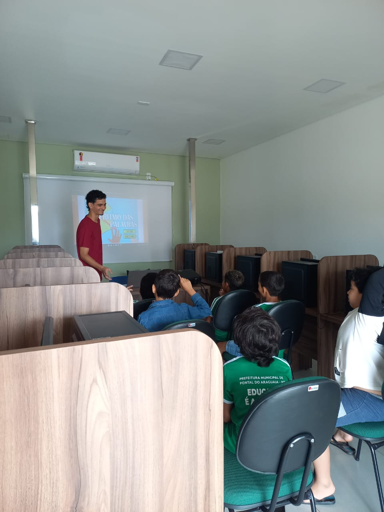

Durante meu estágio técnico, atuei na área da educação, auxiliando crianças e técnicos estudantis na introdução à informática. Para tornar o aprendizado mais acessível e envolvente, dediquei-me a apresentar jogos educativos e utilizar metodologias simples, que facilitassem o entendimento das crianças. Ensinei noções básicas de informática, como o uso de sistemas operacionais e navegação na internet. Além disso, colaborei com os técnicos na adaptação de materiais didáticos e na implementação de estratégias de ensino. Essa experiência me proporcionou uma valiosa oportunidade de aplicar meus conhecimentos, ao mesmo tempo em que desenvolvi habilidades de comunicação e adaptação a diferentes estilos de aprendizado.